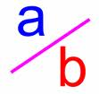

Un número racional es un número con un numerador y un denominador de la forma a/b,

donde a es el numerador y b es el denominador. Por ejemplo, 1/3, 3/4 y 5/2.
Un número racional no puede tener un cero como denominador, pero si se admite un cero como numerador.
Cada número entero a es equivalente al número racional a/1.
Los números racionales se utilizan en el cálculo exacto en el que intervienen fracciones. Por ejemplo, 1/3 = 0.33333... no se puede representar de forma precisa utilizando el formato de punto flotante. Para obtener resultados exactos, se deben utilizar entonces números racionales.
Los números racionales pueden ser equivalentes, por ejemplo, 1/3 = 2/6 = 3/9 = 4/12. Por convenio, se utiliza un 1/3 para representar a todos los números racionales que son equivalentes a 1/3.
El numerador y el denominador de 1/3 sólo tienen como divisor común al número 1, por lo tanto, se dice que 1/3 está reducida a su mínima expresión.
Para reducir un número racional a su mínima expresión, es necesario encontrar el máximo común divisor, de los valores absolutos de su numerador y denominador y dividir ambos por dicho valor.
Para calcular el maximo comun divisor de dos números puede usar el siguiente algoritmo:
def gcd(n, d):
n1 = abs(n);
n2 = abs(d)
gcd = 1
k = 1
while k <= n1 and k <= n2:
if n1 % k == 0 and n2 % k == 0:
gcd = k
k += 1
return gcd
El fichero gcd.rb contiene una implementación en Ruby del máximo común divisor. Haciendo uso del depurador de ruby detecte el error en el código.
Para invocar al depurador, se ha de ejecutar: ruby -rdebug gcd.rb
Una vez dentro de mismo:
Para pedir ayuda el comando es:
(rdb:1) help
Para listar el programa
(rdb:1) l
[-4, 5] in gcd.rb
=> 1 def gcd(u, v)
2 u, v = u.abs, v.abs
3 while v == 0
4 u, v = v, u % v
5 end
Para ejecutar la siguiente sentencia:
(rdb:1) n
Para establecer un punto de ruptura (breakpoint):
(rdb:1) b 4
Para ver dónde se está:
(rdb:1) w
Implemente una clase Ruby para representar los números racionales.
Cada objeto debe representar un número racional reducido a su mínima expresión. Se han de implementar los métodos de instancia que se solicitan a continuación:
to_s #devuelve una cadena con la representación del racional
suma #devuelve un nuevo racional que suma al objeto que invoca el que le pasan como parámetro
resta #devuelve un nuevo racional que resta al objeto que invoca el que le pasan como parámetro
producto #devuelve un nuevo racional que multiplica al objeto que invoca el que le pasan como parámetro
division #devuelve un nuevo racional que multiplica al objeto que invoca el que le pasan como parámetro
Implemente un conjunto de Pruebas Unitarias que permitan comprobar el correcto funcionamiento de la clase que implementa a los números racionales.